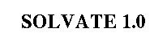
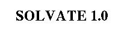
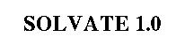
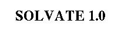

General License Agreement and Lack of Warranty
This software is distributed in the hope that it will be useful
but without any warranty. The author does not accept responsibility
to anyone for the consequences of using it or for whether it serves
any particular purpose or works at all. No warranty is made about
the software or its performance.
Use and copying of this software and the preparation of derivative
works based on this software are permitted, so long as the following
conditions are met:
-
The copyright notice and this entire notice are included intact
and prominently carried on all copies and supporting documentation.
-
No fees or compensation are charged for use, copies, or
access to this software. You may charge a nominal
distribution fee for the physical act of transferring a
copy, but you may not charge for the program itself.
-
If you modify this software, you must cause the modified
file(s) to carry prominent notices
describing the changes, who made the changes, and the date
of those changes. Please do inform the author about
major modifications.
-
Any work distributed or published that in whole or in part
contains or is a derivative of this software or any part
thereof is subject to the terms of this agreement. The
aggregation of another unrelated program with this software
or its derivative on a volume of storage or distribution
medium does not bring the other program under the scope
of these terms.
This software is made available as is, and is distributed without
warranty of any kind, either expressed or implied.
In no event will the author or his institutions be liable to you
for damages, including lost profits, lost monies, or other special,
incidental or consequential damages arising out of or in connection
with the use or inability to use (including but not limited to loss of
data or data being rendered inaccurate or losses sustained by third
parties or a failure of the program to operate as documented) the
program, even if you have been advised of the possibility of such
damages, or for any claim by any other party, whether in an action of
contract, negligence, or other tortuous action.
SOLVATE is written by Helmut Grubmüller,
Theoretical Biophysics Group, Institut für Medizinische Optik,
Ludwig-Maximilians-Universität München, München, Germany.
Copyright © 1996. All rights reserved.
Helmut Grubmueller
Wed Jun 19 19:00:00 MET DST 1996
 
